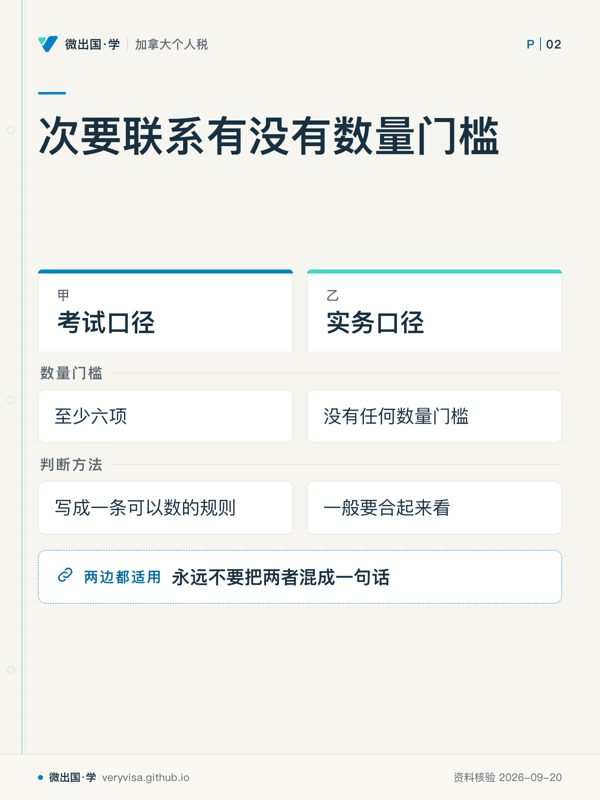
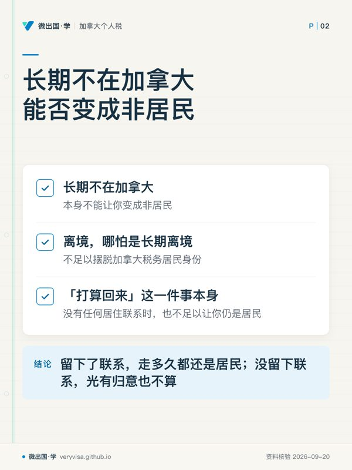

核实日期：2026-09-05｜现行口径：2026 税年（2027 年春季申报）｜法条现行至 2026-06-21（最后修订 2026-06-18）。 本页的机制层（判定顺序、三层联系、183 天、48% 附加税）十余年未变，属长青内容；会过期的只有与身份挂钩的几个金额，复核周期到 2027-01-31。
这一页只回答一个问题：你（或你的家人、你的客户）到底是不是加拿大税务居民。 这个判断决定的不是一格数字，而是整张表的性质——是就全球收入申报，还是只就加拿大来源收入申报；是按某个省交省税并领省级福利，还是不属于任何省、改交一笔联邦附加税；是能拿儿童福利与日用品补贴，还是一分拿不到。它落在 T1 表第 1 页的「居住信息 (Residence information)」区，四行小格子，每一行都由这个判断驱动。读完你应该能做到三件事：按正确顺序把自己走一遍判定树并说出停在哪一档；判断某一年该用省份税包还是非居民与视同居民专用税包；识别出六种最常见的错判，其中两种连专业人士也常犯。
ℹ️
这一页与相邻两页的分工
新移民首年那些按天打折的抵免、登陆日的视同处置、首年 T1135 豁免，全在 ca-residency-01-newcomers；两国国内法都判你是居民时怎么用协定第四条仲裁、以及美方的实质居留测试，全在 xb-01-treaty-tiebreaker。本页只讲加拿大国内法这一侧的判定本身，走到「需要动用协定」那一步就把读者交给跨境页。
一、制度设计与底层逻辑：加拿大把征税权挂在「你住在哪」上
1.1 一条法条决定了整套结构
《所得税法》(Income Tax Act, ITA) 第 2 条把纳税义务分成两半：居住于加拿大的人就其全球收入纳税，非居民只就在加拿大赚得的应税收入纳税。这句话里没有出现「公民」，也没有出现「永久居民」。税务居民身份是一个事实判断，不是一个身份证件问题——这是本页第一条、也是最贵的一条常识。
正因为法律把征税权挂在一个事实上，而事实是可以争的，整部法里就必须有一套判断它的方法。这套方法有三层，层层叠加：
第一层是法院给的标准。ITA 从头到尾没有定义「居民」。最高法院 1946 年的 Thomson v MNR 案填上了这个空：居住是「一个人在心理上与事实上把自己的日常生活方式，连同其社会关系、利益与便利，安顿、维持或集中于某地的程度问题」；另一位法官在同一判决里给了更好用的一句——「通常居住」是指一个人在其已经安顿下来的生活常规中，经常、正常或习惯性地生活的那个地方。这句话至今仍是加拿大税务局 (Canada Revenue Agency, CRA) 解释件的第一段（CRA）。Thomson 案本身的事实很有教育意义：当事人卖掉了加拿大的房子、迁往百慕大、取得了当地身份并宣称那里是他的永久居所，但他每年夏天回加拿大住自己后来买下的房子，其余时间在美国，反而很少去百慕大。法院判他仍是加拿大的通常居住者，并说他在百慕大的活动「纯属做戏」。离开的形式做足了，生活重心没有移走，就不算离开。
第二层是成文法的补丁。有些人明明没有把生活重心放在加拿大，国家仍然想对他们征全球税——待得够久的访客、外派的军人与外交人员、援外项目人员。ITA s.250(1) 把这些情形一条条列出来，用「视同 (deemed)」两个字直接绕过事实判断（加拿大联邦法规库）。
第三层是反向阀门。既然第一、二层都可能把一个人拉进加拿大居民的范围，而对方国家也在用自己的规则拉，就必须有一个装置把双重居民推回去一边。ITA s.250(5) 就是这个装置：本来按加拿大法是居民、但按税收协定被判给另一国的，视同非居民。
1.2 判定顺序不是风格问题，是条文的适用条件
这三层不是并列的选项，是有严格先后的台阶。CRA 在其居民身份解释件里把这一点写成一句几乎不留余地的话：在确认此人不是事实居民之前，s.250(1) 根本不适用（CRA）。也就是说：
- 第一问：有没有居住联系？ 有——事实居民 (factual resident)，判定结束，不必数天数。
- 第二问（只有第一问答「没有」才问）：一年内在加拿大逗留满 183 天了吗？或者属于那六类特殊职务吗？ 是——视同居民 (deemed resident)。
- 第三问（两问都答「没有」）： 非居民 (non-resident)。
- 第四问（只有前面判成加拿大居民、而对方国家也判你是它的居民才问）：协定第四条的仲裁规则判给谁？ 判给对方——视同非居民 (deemed non-resident)，后果与非居民相同。
顺序倒过来会怎样？这是本课最常见的实质性错误。一个持学签在温哥华租房、办了省医保、开了本地账户、一年在境内三百多天的留学生，如果按「先数天数」判，会被算成视同居民——于是他不属于任何省、拿不到卑诗省的任何省级抵免、还要在联邦税之上补一笔 48% 的附加税。而按正确顺序，他有住所、有一整套社会经济联系，是事实居民，按 12 月 31 日的居住省交省税并领省级福利。同一个人，两套算法，省税那一格从「一笔附加税」变成「一笔省税加一串省级抵免」。
1.3 谁与谁在博弈：隐形的第三方是省
大多数人以为这场博弈只有两方：纳税人想少交，CRA 想多收。实际上第三方——省——的利益比谁都直接。省个人所得税由 CRA 代征，但归属完全取决于居民身份与 12 月 31 日的居住省这两格。判成视同居民，省一分钱拿不到，那笔钱变成联邦附加税进了联邦；判成事实居民，省不但拿到省税，还要付出省级抵免与省级福利。所以「视同居民」这个身份不是省钱路径，它是把省这一环整个拿掉——拿掉的既有你要交的，也有你能拿的（加拿大联邦法规库）。
而纳税人这一侧真正的博弈点是证据。居民身份是事实问题，事实由证据支撑。CRA 判断一个人「是不是真心要永久切断联系」时，有两条几乎没人事先想到的抓手：你有没有按离境的规矩办事（该交的离境税交了没有），以及你有没有通知加拿大境内的付款方改按非居民预扣（CRA）。行为被当作意图的证据——一个人一边声称自己 2024 年就离境了，一边继续让加拿大券商按居民口径不预扣，这两件事在 CRA 眼里是互相矛盾的。
1.4 判错了会怎样
判成非居民而实际是居民：漏报的是全球收入，补税之外按 ITA s.162(1) 计迟报罚与利息；如果同时漏了境外资产申报表，正常复评期还会延长三年（CRA）。
判成居民而实际是非居民：多交的税未必能拿回来。非居民的被动收入走的是 Part XIII 预扣，这笔税不能靠报税退回来，只有租金与某些退休金能通过特定的选择性申报通道回收（CRA）。
身份变了而没意识到：最贵的一类。协定仲裁把你判给对方国家的那一刻，s.250(5) 生效，而它的效力是「for all purposes of the Act」——视同处置（俗称离境税）与 Part XIII 预扣从那一刻起全套适用（CRA）。免税储蓄账户 (TFSA) 也从那一刻起变成陷阱：非居民期间的任何供款按 1%/月征税直到取出为止。
二、2026 税年现行规则与数字
2.1 事实居民：三层联系，以及考试口径里那条不存在的「六项门槛」
CRA 把居住联系分三层（CRA）：
重大居住联系 (significant residential ties) 只有三样：住所（自有或租住，只要可供本人居住）、配偶或同居伴侣、受养人。CRA 的原话是这三样「几乎总是」构成重大联系。有其一，通常判定就结束了。
次要居住联系 (secondary residential ties) 是一张十项的清单：加拿大境内的个人财产（家具、衣物、车辆、休闲车）、社会联系（休闲或宗教组织的会籍）、经济联系（受雇于加拿大雇主、参与加拿大生意、银行账户、退休储蓄计划、信用卡、证券账户）、永久居民身份或有效工作许可、省或地区的医疗保险、省或地区驾照、在省或地区注册的车辆、季节性住所或已出租的住所、加拿大护照、加拿大工会或专业组织会籍。
其他居住联系 分量更轻：加拿大通信地址、邮政信箱、保险箱、印有加拿大地址的名片与信纸、加拿大电话登记、本地报刊订阅。
⚠️
「凑满六项次要联系」是旧版考试口径的判定表，不是现行的官方口径
2024 税年的培训材料把次要联系写成一条可以数的规则：要靠次要联系定性，得凑满至少六项。CRA 现行解释件里没有任何数量门槛，原话只有一句「次要居住联系一般要合起来看 (looked at collectively)，才能评估其中任何一项的分量」，并补充说单独一项次要联系足以定性的情形「不寻常」（CRA）。 考试口径：如果卷子考的是那一版判定表，按「至少六项」答。 实务口径：按「合起来看，权重不等」判。数量法两头都会错——五项强联系（本地工作 + 省医保 + 驾照 + 全套家当 + 车）被放走，六项弱联系（信用卡 + 邮箱 + 报刊订阅 + 保险箱 + 名片 + 电话登记）反而被判成居民。 两个口径不一致时，写给客户看的东西用实务口径，答卷子用旧版考试口径，永远不要把两者混成一句话。
还有一条被反复读漏的：长期不在加拿大，本身不能让你变成非居民。CRA 引述法院判决的原话是——法院判决的强烈倾向是把离境（哪怕是长期离境）视为不足以摆脱加拿大税务居民身份；而「打算回来」这一件事本身，在没有任何居住联系的情况下，也不足以让你仍是居民（CRA）。这两句要一起读：留下了联系，走多久都还是居民；没留下联系，光有归意也不算。
2.2 视同居民：三个条件，缺一不可
183 天这条路（ITA s.250(1)(a)）要求三个条件同时成立（CRA）：
- 一个日历年内在加拿大逗留 (sojourn) 合计满 183 天；
- 没有重大居住联系；
- 不被加拿大与某国之间的税收协定判为该国居民。
第三个条件是最常被漏掉的一个。加拿大与九十多个国家有生效的税收协定，从这些国家来的人一旦按协定被判为对方居民，就走不到视同居民这一档。结果是：真正落进视同居民的，绝大多数来自无协定国。
「逗留」的口径有两条硬规则（CRA）：一天的任何一部分都算一天——早上入境傍晚离境，算一天；美加通勤日不算——住在美国、每天开车过境来加拿大上班、当晚回家睡觉的人，即使一年跨境二百多次，一天逗留都没有。区分点不在于你人来没来，而在于你有没有在加拿大建立临时居所：同一个人如果改成来加拿大度假两周，那两周（含零头天）每一天都要计入。
另一条路是特殊职务（ITA s.250(1)(b) 至 (g)，加拿大联邦法规库、CRA）。六类人不管住在哪里、在哪服务，只要不是事实居民，一律视同居民：年内任何时候是加拿大武装部队成员的；年内任何时候是联邦或省的大使、部长、高级专员、官员或雇员，且受聘前是加拿大居民或该年领取了代表津贴的；在国际发展援助项目下于境外提供服务、且服务开始前三个月内任何时候是加拿大居民的；海外加拿大部队学校教职员中选择按居民身份申报的；上述四类人的受养子女，且该子女当年收入不超过当年的基本个人额；以及因与某个加拿大居民的亲属关系而在对方国享受几乎全部收入免税待遇的人（CRA 把「几乎全部」量化为在对方国被课税的收入不足 10%）。
ℹ️
时间上的一条补丁：视同居民不一定是整年
一般说法是「视同居民按整年算」，这在 183 天那条路上成立。但特殊职务那几类不是：年中不再属于该类别的，只视同居民到那一天为止（ITA s.250(2)，CRA）。一个军人 2026 年 9 月退役并留在派驻国定居，他 2026 年 1 月 1 日到 9 月退役日是视同居民，之后回到事实判断。
2.3 非居民：两套完全不同的税，混起来就会算错
非居民面对的不是一套税，是两套（CRA）：
Part XIII 税是预扣税，由加拿大付款方扣缴，性质是终局的——一般不能仅靠普通T1改为累进税；合格选择申报与NR7-R错扣退款是不同路径。法定税率 25%，协定只能下调（ITA s.212(1)，加拿大联邦法规库）。适用对象是股息、租金与特许权使用费、退休金、老年保障金、公积金给付、退职金、注册退休储蓄计划与注册退休收入基金的提取、年金、管理费。有一条常被忽略的减免：与付款方非关联（arm's length）的利息一般免预扣，所以非居民在加拿大银行的存款利息通常一分不扣。
只有两类收入可以选择改走申报通道把多扣的要回来：加拿大不动产租金与木材特许权使用费（走 ITA s.216 的选择性申报），以及某些加拿大退休金（走 s.217）。除此之外，Part XIII 扣走了就是扣走了。
Part I 税才是要报表算总账的那套：在加拿大的受雇所得、在加拿大经营生意的所得、加拿大奖学金研究金的应税部分、处置应税加拿大财产的应税资本利得、在加拿大提供服务（非常规连续受雇）的所得。
处置加拿大财产须拆分资产类别。 s116一般买方责任率25%，可折旧TCP等指定财产50%，通常按超过相应证书限额部分计算；汇缴在取得月份月末后30日内。土地与出租建筑不统一按25%，证书也不等于卖方最终所得税已全部结清（Justice Canada）。
福利侧一刀切：非居民拿不到儿童福利，唯一例外是视同居民的配偶（CRA）。
2.4 与身份挂钩、每年会变的数（三列表）
| 项目 | 2024 税年（考试口径那一年） | 2025 税年 | 2026 税年现行 | 状态 |
|---|---|---|---|---|
| 联邦基本个人额上限（特殊职务视同居民的受养子女收入门槛就等于它） | 15,705 元 | 16,129 元 | 16,452 元 | 已生效（s.117.1 逐年指数化） |
| 联邦基本个人额下限（高收入者） | 14,156 元 | 14,538 元 | 14,829 元 | 已生效 |
| 非退还抵免的换算率（最低税阶率） | 15% | 14.5% | 14% | 已生效（2026-03-12 御准） |
| 日用品补贴成人上限（各年7月福利期）（原货劳税抵免；非居民无、视同居民有） | 340 元 | 349 元 | 445 元 | 已生效；各年7月至次年6月、前一年收入基年 |
| 儿童福利基础额（6 岁以下，按福利年 7 月起算） | 7,787 元 | 7,997 元 | 8,157 元 | 已生效 |
| 卑诗省基本个人额（只有事实居民用得上） | 12,580 元 | 12,932 元 | 13,216 元 | 已生效 |
| 卑诗省最低税阶率 | 5.06% | 5.06% | 5.6% | 已生效（2026 年省预算直接改法，非指数化） |
出处：联邦指数化各值与更名增额见 CRA（1、2、3）；受养子女门槛等于当年基本个人额、CRA 自己列出历年值见 CRA；卑诗省两行见 CRA、BC 省政府。
2.5 与身份挂钩、但十几年没变的数（第二张三列表）
| 项目 | 2024 税年（考试口径那一年） | 2025 税年 | 2026 税年现行 | 状态 |
|---|---|---|---|---|
| 逗留视同居民的天数门槛 | 183 天 | 183 天 | 183 天 | 已生效，写死在条文里 |
| 联邦附加税率（顶替省税） | 48% | 48% | 48% | 已生效，条文固定百分比，不指数化 |
| 非居民被动收入法定预扣率 | 25% | 25% | 25% | 已生效，协定只能下调 |
| s116一般／指定可折旧等财产 | 25%／50% | 25%／50% | 25%／50% | 按类别与证书限额分别核 |
| 境外资产申报表的成本额门槛 | 100,000 元 | 100,000 元 | 100,000 元 | 已生效，不指数化（2013 税年起未变） |
| 离境人财产清单的市值门槛 | 25,000 元 | 25,000 元 | 25,000 元 | 已生效，不指数化 |
| 非居民全额抵免的法定标准 | 全部或几乎全部（行政口径 90%） | 同左 | 同左 | 已生效 |
出处：183 天与 48% 见 加拿大联邦法规库（1、2）；25% 两项见 加拿大联邦法规库；两个门槛见 加拿大联邦法规库、CRA（1、2）。
把这两张表并排放，是这一页最想让你记住的一件事。 上面那张是年度更新的债：每年 1 月与 7 月各变一次，考试口径里的数字每过一年就旧一截，2024 税年那一列与 2026 现行差了约 4.8%。下面那张是资产：它们写在条文里，改动需要立法，十几年没动过。所以复习时间该往哪边花，一眼可见——背下面那张表的机制，查上面那张表的当年值。
三、实务流程：从判定到填表
3.1 判定的操作版：按顺序问五句话
第一句：在加拿大有没有住所、配偶或同居伴侣、受养人？ 有其一，你是事实居民，跳到第 3.2 节。注意「住所」的口径宽得超出多数人预期：父母家里长期给你留着的一间房算；自己名下出租给第三方的房子，如果是公平交易条件下的正常出租，一般不单独算（CRA）。
第二句：次要联系合起来有多重？ 没有重大联系时才问这一句，而且是掂量不是数数：本地工作、省医保、驾照、全套家当在这里，这组联系的分量远大于「信用卡加邮箱加报刊订阅」。
第三句：这一年在加拿大逗留了多少天？ 先分清每一段停留的性质（通勤还是逗留），再数天数。先数天数的人一定会数错。
第四句：你所在的另一个国家，按它自己的法律认不认你是它的居民？ 只有两边都认，才需要动用协定。这一步要用对方国的法律，不能用加拿大的标准去猜。
第五句：两国有没有协定？ 有——协定第四条的四级仲裁规则决定归属，判给对方即触发 ITA s.250(5) 视同非居民；仲裁规则的具体走法与美方那一侧的实质居留测试见 xb-01-treaty-tiebreaker。没有协定——你停在第二或第三句问出的那个身份上。
3.2 T1 表第 1 页那四行
居住信息区一共四行，每一行的填法都是身份判定的下游结果（CRA）：
第一行填12 月 31 日当天你居住的、或被视为事实居民所属的省或地区。这一行决定整年的省税与省级抵免，不是按住得最久的省算——12 月 30 日从卑诗搬到亚伯达，整年按亚伯达。事实居民（人在境外）填的是「联系所在省」，通常就是离境前住的那个省；视同居民填「其他」。
第二行填现在居住的省或地区（与通信地址不同时才填），CRA 用它算你可能有资格的省级抵免与福利。
第三行填自雇者的固定营业场所所在省。
第四行填入境日或离境日，只有当年成为或不再是税务居民的人要填。这一格直接驱动首年与末年抵免的按天比例计算。
3.3 用哪个税包
事实居民（哪怕人在境外）用联系所在省或地区的税包（CRA）。视同居民与视同非居民用非居民与视同居民专用税包（CRA）。非居民要看收入类型：只有受雇或经营所得的，用赚取该所得的那个省的税包；还有资本利得、奖学金研究金一类其他应税加拿大来源收入的，改用非居民与视同居民专用税包（CRA）。
申报期限对三类人是一样的：次年 4 月 30 日；本人或配偶在加拿大经营生意的延到 6 月 15 日，但欠税仍须在 4 月 30 日前缴清。
3.4 NR73 与 NR74：是意见，不是必填表
两张表按方向分工：离境用 NR73，入境或短暂停留用 NR74，现行版本都是 2024 年改版的那一版，2026-09-05 抓取时未再改版（CRA）。
关键是它们的法律性质。 CRA 自己在判定入口页上一律用「意见 (opinion)」和「正式居民身份判定 (official residency determination)」这样的措辞，从不出现「必须提交」（CRA）。表的用途说明写的也是「需要帮助判定居民身份时填写」。换句话说：这不是申报义务，是你主动申请一份行政意见。
那什么时候值得交？两种情形。一是事实本身就在灰区、而这一年的判断会连带影响后面很多年（典型：外派多年但配偶子女留在加拿大、或者持临时许可长期居住却每年长时间回国）。二是你预期会被复核，且宁可先花时间也不愿等评税后再争。
什么时候别交？事实清楚的时候。 一份填得含糊或前后不一致的申请，会把 CRA 的注意力引到一份原本平安无事的申报表上；而且它只是意见，CRA 事后仍可以按新事实重新评估。事实清楚就直接按判断申报并留好证据，这比申请一份意见更稳。
3.5 要留的证据
居民身份是事实问题，事实靠证据。按上面五句话的顺序，每一句都该有对应的纸：住所（租约或产权文件、水电账单）、家庭（配偶与子女的居留与在校记录）、天数（护照出入境记录、机票、边境记录）、对方国身份（对方国的税务居民证明或报税记录）、以及行为证据——离境那一年交过离境税的凭据、通知加拿大付款方改按非居民预扣的往来记录（CRA）。最后这一类最容易被忽略，却是 CRA 判断意图时最看重的一类。
本板块的配套练习与模考题：38
四、联邦之外：卑诗省这一格差多少钱
省这一环在身份判定里不是背景板，它是三档身份之间差额最大的那一块。
事实居民按卑诗省交省税，享省级抵免。2026 税年卑诗省最低税阶率是 5.60%（2026 年省预算直接改法调高，不是指数化的结果），省基本个人额 13,216 元。省级可退还抵免与福利也只有这一档拿得到，详见 ca-provincial-01-bc-tax-credits-2026。
视同居民通常对非省内所得适用 ITA s.120(1) 联邦附加税；省内营业所得和魁省视同居民的省法特殊处理须另核（canada.ca）。这里有一处几乎所有人都读错的细节：48% 不是对全部收入按 48% 加征，而是按比例——附加税 ÷（48% × 联邦应付税）＝ 非省内所得 ÷ 全部所得（加拿大联邦法规库）。所以一个视同居民若有一部分收入确实是在某省赚的（例如省内经营所得），那一部分照常交省税，只有剩下的部分按 48% 计附加税。
这个差额有多大？ 用 2026 税年的率做一次示例估算（数字为示例，实际计算还要考虑各档抵免）：一个应税收入落在最低税阶内的人，联邦边际税率 14%，若他是视同居民，附加税的边际效果是 14% × 48% ＝ 6.72%；若他是卑诗省的事实居民，省边际税率是 5.60%。看上去只差 1.12 个百分点，真正的差额却不在这里——事实居民还能用省基本个人额 13,216 元抵掉一截省税、能领省级可退还抵免；视同居民一样都没有。所以「视同居民」在卑诗省几乎总是更贵的那一档，把它当省钱路径的人算反了方向。
非居民若在卑诗省有受雇或经营所得，用卑诗省的税包报那部分 Part I 税，但非退还抵免受 ITA s.118.94 限制——只有当加拿大来源收入占其全球净收入的「全部或几乎全部」（CRA 行政口径取 90%）时才能全额申报。
魁北克有一条特殊安排值得知道：离境前住在魁北克的人被视同居民时，可能同时被魁省法律视同魁省居民，两头都要交的，可以在报税时申请豁免联邦附加税（CRA）。
五、历史变革：这套判定是怎么变成今天这样的
1946 年：法院填上了法律的空白。 ITA 至今没有定义「居民」，Thomson 案给出的「日常生活方式安顿在哪里」标准用到今天，八十年未被推翻。这是本页所有内容里最老、也最稳的一块地基。
1998 年 2 月 24 日：视同非居民从公司扩到个人。 在这一天之前，ITA s.250(5) 只适用于公司。也就是说，协定仲裁把个人判给对方国家，在加拿大国内法上并不当然使他停止成为加拿大居民；那之后才有了今天这条「协定赢了就真的不是居民、视同处置与预扣全套适用」的规则。CRA 的解释件里至今留着一条祖父条款：1998-02-24 当天已处于该状态并持续维持至今的个人，不适用 s.250(5)（CRA）。这条几乎不会遇到，但它解释了为什么老资料里对这个问题的说法与现在不同。
2013 年与 2015 年：解释件换代后就没再动过。 CRA 的居民身份解释件 2013 年取代了更老的一份说明，2015 年 11 月 26 日做了最后一次修订，至今十一年未改（CRA）。所以判定机制这一层是长青内容；会过期的只有它牵连到的金额。
2026 年 7 月：一个与身份直接挂钩的福利改了名并增了额。 原货劳税抵免更名为「加拿大日用品补贴」，同时增额 25%，成人上限从 2025 年的 349 元提到 445 元。考试口径那一版通篇用的是旧名字。 这条对居民身份页的意义在于：这项抵免视同居民有资格申请、非居民没有，所以它是三档身份之间又一处实打实的差额。
2026 税年：最低税阶率降到 14%。 非退还抵免的换算率等于最低税阶率，所以这次降税同时把所有抵免的实际价值同步压低了一截。对部分年度居民与非居民尤其要留意：他们的抵免本来就要按天数或按 90% 规则打折，再叠一层换算率下调，实际到手的抵免比 2024 税年的考试口径算例要少。
六、案例
案例一 · 温哥华的访问学者：住校方公寓、家人在境外（人物与数字均为示例）
李博士 2026 年 2 月来温哥华某大学做八个月访问研究，学校提供一套公寓，他开了本地账户收工资，妻儿留在母国，母国与加拿大有生效的税收协定。他 2026 年在加拿大境内约 250 天。
第一句：他有住所吗？校方提供、可供他随时居住的公寓，属于「可供本人居住的住所」——有重大居住联系。判定停在这里：他是事实居民（2026 年 2 月起的部分年度居民）。
注意判定并没有走到 183 天那一步。 如果按「先数 250 天」的错误顺序，他会被判成视同居民，后果是不属于任何省、拿不到任何卑诗省抵免、还要交 48% 附加税。
第四、五句要不要问？ 要——他妻儿在母国、多半仍被母国认定为其居民，于是他是双重居民，需要用协定第四条仲裁。若仲裁判给母国，ITA s.250(5) 生效，他从头就是视同非居民，只就加拿大来源的受雇所得交 Part I 税。同一个人，三种可能的结局，取决于走到了哪一步。 仲裁怎么走见 xb-01-treaty-tiebreaker。
案例二 · 一条边界，两个方向的通勤者（人物与数字均为示例）
方向 A：住素里，每天开车去美国上班。 他的家、配偶、孩子都在素里——重大居住联系齐全，事实居民，全球收入（含美国工资）都要报进加拿大 T1，交联邦税与卑诗省税，再用境外税收抵免消化美方已交的税。他在美国的天数会不会让美方也认他是居民，是另一套判断，见跨境页。
方向 B：住美国，每天开车来加拿大上班，一年跨境 230 次。 他在加拿大没有住所、配偶、受养人——不是事实居民。逗留天数呢？通勤日一天都不算（CRA），所以他的逗留天数是零，走不到 183 天。结论：非居民。他在加拿大的工资走 Part I 税，用赚取该所得的那个省的税包申报；非退还抵免要过 90% 那道关（CRA）。
同一条边界、同一种往返频率，两个方向的结论完全相反，因为判据从来不是「你跨了多少次境」，而是「你的生活重心与临时居所在哪一边」。
案例三 · 派驻无协定国的两个人（人物与数字均为示例）
同一年，两个卑诗省居民被派往同一个与加拿大没有税收协定的国家工作三年，都卖掉了房子、配偶随行、切断了全部居住联系。
张女士是私营企业外派。 她不是事实居民（联系已断），不是视同居民（不属于那六类职务，且不在加拿大逗留），结论是非居民。离境当年是部分年度居民，要按离境日做视同处置并交离境税；离境时按T1161先剔除排除项，余下财产市值合计超过 25,000 元的还要交离境人财产清单（CRA）。此后她只就加拿大来源收入纳税。
王先生是联邦政府雇员，派驻前是加拿大居民。 他落进 ITA s.250(1)(c)，是视同居民——即使他和张女士做了完全一样的切断动作。后果：全年全球收入照报，能用全部联邦非退还抵免与联邦可退还抵免，一般对非省内所得交联邦附加税；是否涉及省内营业所得、魁省视同居民及福利资格，逐项另核，不能把雇员身份视作所有福利的自动资格（CRA）。如果他有一个随行的成年子女，那个子女要看收入：净全球收入不超过当年联邦基本个人额（16,452 加元（2026 税年；已生效；官方公布值））的，也被视同居民；超过的，另行判断（CRA）。
这两个人的差别不在他们做了什么，而在他们受雇于谁。 这正是特殊职务类视同居民的设计意图：国家不希望自己派出去的人因为派出这件事而脱离本国税网。
七、常见错报与自查清单
-
拿护照或枫叶卡当税务居民的判据。 识别：只要你的理由里出现「我是公民 / 我有永久居民身份 / 我只是持临时签证」，就是拿移民身份答税务问题。移民身份决定你能不能住、能不能工作，不决定你的纳税范围。反过来也一样——从没拿过枫叶卡的人，只要在加拿大安家落户，照样是税务居民。
-
以为出国就自动变成非居民，或者相信「离开两年就自动是非居民」。 识别：任何一条以「多长时间」为唯一条件的规则都是假的。CRA 引述的法院倾向很明确：长期离境本身不足以摆脱居民身份；关键是有没有把居住联系切断。
-
先数 183 天，再看联系。 识别：你的第一个动作是打开日历数天数。正确的第一个动作是问「我在加拿大有没有住所、配偶、受养人」。顺序错了，留学生、长期访问学者、临时工这三类最容易被整批算错。
-
把次要联系当成可以数的清单，凑够六项就定性。 识别：你在心里列 1、2、3。现行官方口径是「合起来看、权重不等」，没有任何数量门槛；考试口径那一版的六项门槛只在答那一版的卷子时用。
-
把「视同居民」当成省钱路径。 识别：你算出来的结论是「不用交省税，所以更划算」。视同居民是通常不按某省年末事实居民处理（省内所得及魁省例外另核）——省税换成了 48% 的联邦附加税，而省级基本个人额与全部省级抵免、省级福利同时消失。
-
把 Part XIII 预扣当成可以报税退回来的税。 识别：你打算「先让它扣着，报税时再要回来」。这笔税是终局的，只有租金与某些退休金能通过特定选择性通道回收，其余扣走即止。
-
离境日按「三个日期取最晚」的通则算，漏了回原居国的例外。 识别：当事人来加拿大之前本来就是那个国家的居民、现在是回去重建原居。这种情形以本人离境当日为准，配偶留下卖房或让孩子读完学年都不推迟这个日期（CRA）。用通则会把离境日推迟数月，连带把视同处置日与全球收入截止日一起算错。
-
以为 NR73 或 NR74 是必须交的表。 识别：你在问「我什么时候要交这张表」。正确的问题是「这一年的事实清楚不清楚、值不值得花时间申请一份意见」。事实清楚的，直接按判断申报并留好证据。
来源
法条（现行合订本，Act current to 2026-06-21）：s.250(1)/(2)/(3)/(5) 事实居民、视同居民、视同非居民（加拿大联邦法规库）· s.120(1) 联邦附加税比例公式（加拿大联邦法规库）· s.212(1) 非居民预扣法定税率（加拿大联邦法规库）· s.116(4)/(5) 处置应税加拿大财产的清税证明与买方代扣。
CRA 现行解释件与页面：Folio S5-F1-C1 ¶1.5–1.16 Thomson 标准与三层居住联系（CRA）· ¶1.22–1.28 何时成为非居民/居民、离境日回原居国例外（CRA）· ¶1.30–1.38 视同居民的省税后果与 s.250(5)（CRA）· 视同居民专页与 183 天口径（CRA）· 事实居民（境外）专页（CRA）· 非居民专页、Part XIII 与 Part I（CRA）· 居民身份交互判定工具（CRA）· NR73/NR74 表格页（CRA）· 国际学生专页（CRA）· 政府雇员专页、受养子女门槛历年值（CRA）· 12 月 31 日居住省专页（CRA）。
年度数字：联邦基本个人额上下限、非退还抵免换算率、日用品补贴、儿童福利基础额（CRA（1、2、3））· 卑诗省基本个人额与最低税阶率（CRA、BC 省政府）· 境外资产申报表与离境人财产清单门槛（加拿大联邦法规库、CRA（1、2））。
术语双语表
| English | 中文 | 一句机制 |
|---|---|---|
| residence status | 居民身份 | 决定申报范围（全球收入还是加拿大来源收入）与省税归属的总开关 |
| factual resident (ITA s.250(3)) | 事实居民 | 按居住联系判出来的居民，优先于任何视同规则；人在境外也可能是 |
| ordinarily resident | 通常居住者 | 在已安顿的生活常规中经常、正常或习惯性居住的那个地方 |
| Thomson v MNR (1946) | 汤姆森案 | 最高法院给出「居住＝生活方式安顿在哪里」的标准，八十年未被推翻 |
| deemed resident (ITA s.250(1)) | 视同居民 | 逗留满 183 天或属六类特殊职务，且非事实居民；附加税与省税按所得及魁省例外分别核 |
| deemed non-resident (ITA s.250(5)) | 视同非居民 | 协定仲裁判给对方国的加拿大居民，后果等同非居民，且「适用本法全部条文」 |
| non-resident | 非居民 | 只就加拿大来源收入纳税 |
| sojourn | 逗留 | 建立临时居所的停留；一天的任何部分算一天，通勤日不算 |
| significant residential ties | 重大居住联系 | 住所、配偶或同居伴侣、受养人；有其一通常即定性 |
| secondary residential ties | 次要居住联系 | 财产、社会与经济联系、驾照、护照、省医保等十项；合起来看，无数量门槛 |
| looked at collectively | 合起来看 | 现行官方口径对次要联系的评估方法，取代考试口径那一版的「至少六项」 |
| Income Tax Folio S5-F1-C1 | 居民身份解释件 | CRA 对居民身份的权威行政解释，2015-11-26 最后修订至今未改 |
| federal surtax (ITA s.120(1)) | 联邦附加税 | 对非省内所得按 48% 的比例加征，顶替省税；固定百分比，不指数化 |
| income earned in a province | 省内所得 | 附加税公式的分母之外那一部分；视同居民若有省内经营所得仍交该省省税 |
| Part XIII tax | 第十三部分税 | 非居民被动收入的预扣税，法定 25%，通常为终局税；s216/s217选择及错扣NR7-R退款另核 |
| Part I tax | 第一部分税 | 要报表算总账的那套税：受雇、经营、应税资本利得等 |
| arm's length | 非关联 | 与付款方非关联的利息一般免加拿大预扣 |
| section 216 election | 第 216 条选择申报 | 非居民的加拿大不动产租金与木材特许权使用费可改走申报通道回收多扣的税 |
| section 217 election | 第 217 条选择申报 | 某些加拿大退休金收入的同类通道 |
| all or substantially all (ITA s.118.94) | 全部或几乎全部 | 非居民全额申报非退还抵免的法定标准，CRA 行政口径取 90% |
| Form NR73 | 离境居民身份判定申请表 | 向 CRA 请求一份意见，非必填；现行版为 2024 年改版 |
| Form NR74 | 入境居民身份判定申请表 | 入境或短暂停留者用，同为意见性质 |
| Income Tax Package for Non-Residents and Deemed Residents | 非居民与视同居民税包 | 视同居民、视同非居民，以及有其他类加拿大来源收入的非居民用它 |
| province or territory of residence on December 31 | 12 月 31 日居住省 | 省税与省级抵免的唯一归属基准，不按住得最久的省算 |
| representation allowance | 代表津贴 | 政府雇员视同居民资格测试的替代条件之一 |
| Form T1161, List of Properties by an Emigrant | 离境人财产清单 | 离境时排除规定财产后市值合计超25,000元即须交；门槛不指数化 |
| Form T1135, Foreign Income Verification Statement | 境外收入核实表 | 成本额年内任何时点超 100,000 元即须申报；门槛不指数化 |
| clearance certificate (ITA s.116(4)) | 清税证明 | 非居民处置应税加拿大财产时的免扣凭据；买方按一般25%或指定50%及证书限额核责任 |
| Canada Groceries and Essentials Benefit (CGEB) | 加拿大日用品补贴 | 原货劳税抵免，2026-07 起更名并增额 25%；视同居民有资格，非居民没有 |
本页知识卡
不看正文也能拿到这一节的核心内容：先看导读，再看图。点图放大，左右翻页。
- 先看先看第一行：核心家庭或住所线索出现时，判断往往很快收束。
- 易漏第二层不是计数游戏，单独一项足以定性的情形并不寻常。
- 下一步去练习把自己的事实分别放进三层，再带边界事实找持牌专业人士。

- 先看先看两栏是否在数项目：左边设门槛，右边看组合权重。
- 易漏数量法两头都会错：五项强联系如本地工作、省医保、驾照会被放走；六项弱联系如信用卡、邮箱、报刊订阅反而会被判成居民。
- 下一步去模考判断题目到底考哪一版，再用讲解核对实际判断方法。

- 先看先盯两个方向：离开多久与有没有回来的打算，都不能单独定性。
- 易漏真正要一起核对的是是否还留有住所、家庭及其他居住事实。
- 下一步去练习按居住联系整理事实，再带跨境安排找持牌专业人士。